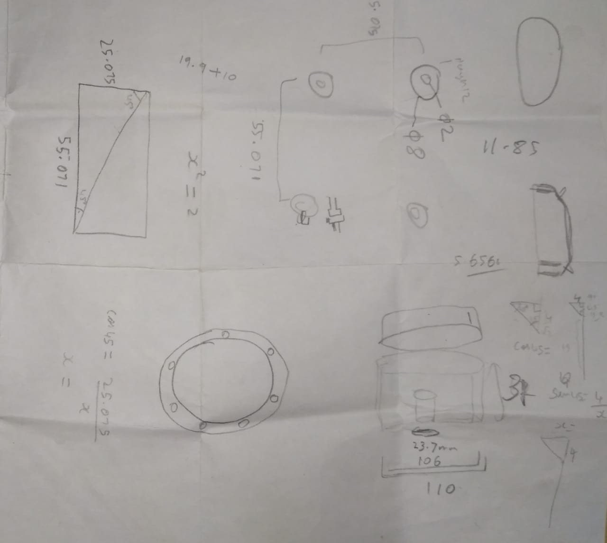
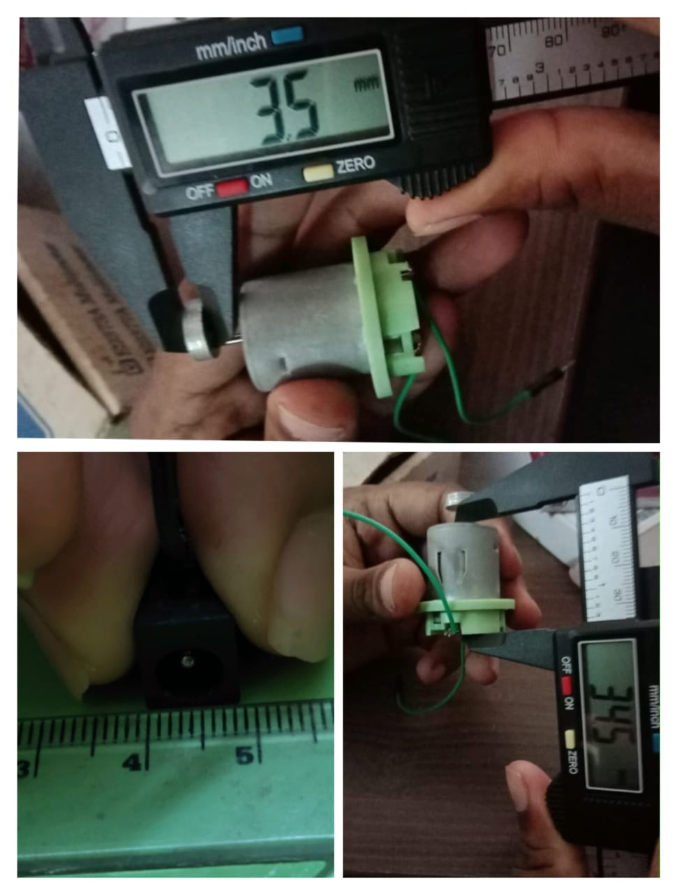
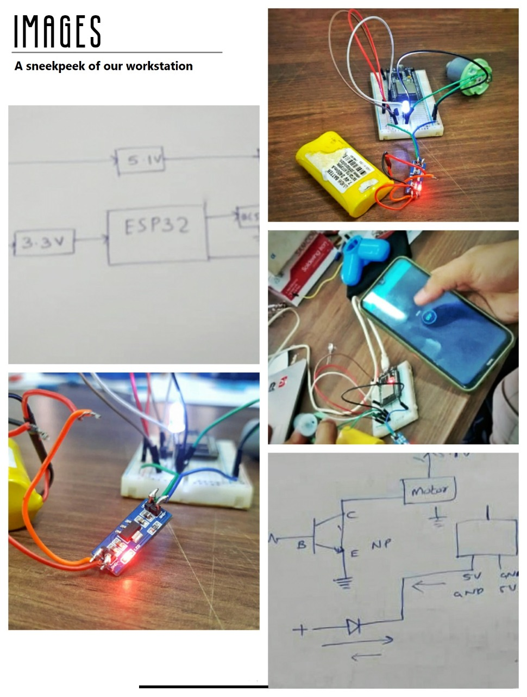

PRODUCT DESIGNING
April 10 2021 to April 17 2021
Softwares Used
1.Fusion 360 unifies design, engineering, electronics and manufacturing to connect your entire product development process from CAD modelling to 3D printing into one cloud-based platform.
2. Ultimaker Cura- It is an open source slicing application for 3D printers.Cura is available under LGPLv3 license.
1. Circuit Diagram
The first task was to draw the circuit according to the specifications. The motor is programmed using ESP32. ESP32 is powered by regulated voltage of 3.3V. The transistor used in 2N2222 . The first draft of the circuit had some mistakes. Afterwards the circuit was modified by Amith sir. The final version of ciruit diagram is as shown below.

2. Rough Work
We considered many options to bring the product into its present shape. Some rough work that we did is also shown below.
3. Identifying the size constraints
Measurements of the motor, ESP 32 and other components used were taken using digital vernier calipers to finalize a suitable size for the CAD model.
